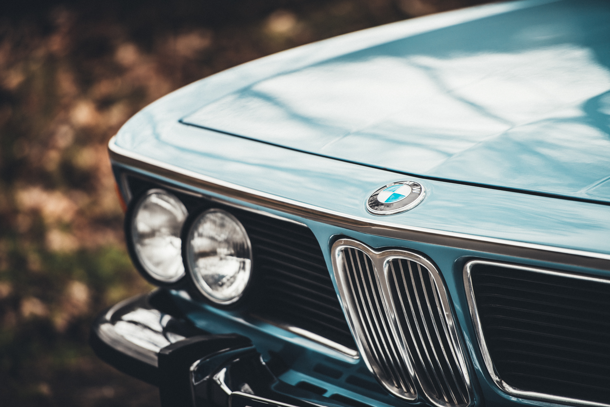
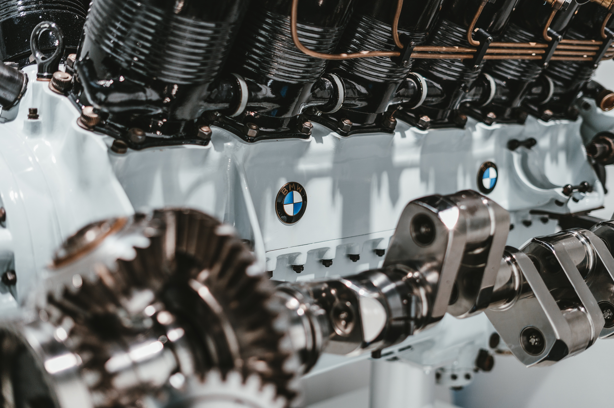

Where is the boundary between the real and digital worlds? And what if the human senses ignore these boundaries? And what if they also crossed the boundary of time between the present and the future? Dee is the BMW vision of the future of digital mobility – and she also hosts this new podcast series. In DEE MY GUEST, she meets people who are accompanying her on her journey into the future and from whom she wants to learn. She and her guests explore the human senses in the real and virtual world. What will our digital future feel like? What will it taste like? What will it smell like or look like? Let’s follow our intuition and find out!


Flugmaschinenfabrik was founded in 1910 by Gustav Otto in Bavaria. The firm was reorganized on 7 March 1916 into Bayerische Flugzeugwerke AG. This company was then renamed to Bayerische Motoren Werke (BMW) in 1922. However, the name BMW dates back to 1913, when the original company to use the name was founded by Karl Rapp (initially as Rapp Motorenwerke GmbH). The name and Rapp Motorenwerke's engine-production assets were transferred to Bayerische Flugzeugwerke in 1922, who adopted the name the same year. BMW's first product was a straight-six aircraft engine called the BMW IIIa, designed in the spring of 1917 by engineer Max Friz. Following the end of World War I, BMW remained in business by producing motorcycle engines, farm equipment, household items and railway brakes. The company produced its first motorcycle, the BMW R 32 in 1923. BMW became an automobile manufacturer in 1928 when it purchased Fahrzeugfabrik Eisenach, which, at the time, built Austin Sevens under licence under the Dixi marque. The first car sold as a BMW was a rebadged Dixi called the BMW 3/15, following BMW's acquisition of the car manufacturer Automobilwerk Eisenach. Throughout the 1930s, BMW expanded its range into sports cars and larger luxury cars. Aircraft engines, motorcycles, and automobiles would be BMW's main products until World War II. During the war, BMW concentrated on aircraft engine production using as many as 40,000 slave laborers. These consisted primarily of prisoners from concentration camps, most prominently Dachau. Motorcycles remained as a side-line and automobile manufacture ceased altogether. BMW's factories were heavily bombed during the war and its remaining West German facilities were banned from producing motor vehicles or aircraft after the war. Again, the company survived by making pots, pans, and bicycles. In 1948, BMW restarted motorcycle production. BMW resumed car production in Bavaria in 1952 with the BMW 501 luxury saloon. The range of cars was expanded in 1955, through the production of the cheaper Isetta microcar under licence. Slow sales of luxury cars and small profit margins from microcars meant BMW was in serious financial trouble and in 1959 the company was nearly taken over by rival Daimler-Benz. A large investment in BMW by Herbert Quandt and Harald Quandt resulted in the company surviving as a separate entity. The Quandts' father, Günther Quandt, was a well-known German industrialist. Quandt joined the Nazi party in 1933 and made a fortune arming the German Wehrmacht, manufacturing weapons and batteries. Many of his enterprises were appropriated from Jewish owners under duress with minimal compensation. At least three of his enterprises made extensive use of slave laborers, as many as 50,000 in all. One of his battery factories had its own on-site concentration camp, complete with gallows. Life expectancy for laborers was six months. While Quandt and BMW were not directly connected during the war, funds amassed in the Nazi era by his father allowed Herbert Quandt to buy BMW. The relative success of the small BMW 700 assisted in the company's recovery, allowing them to develop the New Class sedans.
The 1962 introduction of the BMW New Class compact sedans was the beginning of BMW's reputation as a leading manufacturer of sport-oriented cars. Throughout the 1960s, BMW expanded its range by adding coupé and luxury sedan models. The BMW 5 Series mid-size sedan range was introduced in 1972, followed by the BMW 3 Series compact sedans in 1975, the BMW 6 Series luxury coupés in 1976 and the BMW 7 Series large luxury sedans in 1978. The BMW M division released its first road car, a mid-engine supercar, in 1978. This was followed by the BMW M5 in 1984 and the BMW M3 in 1986. Also in 1986, BMW introduced its first V12 engine in the 750i luxury sedan. The company purchased the Rover Group in 1994, however the takeover was not successful and was causing BMW large financial losses. In 2000, BMW sold off most of the Rover brands, retaining only the Mini brand. In 1998, BMW also acquired the rights to the Rolls-Royce brand from Vickers Plc.
 >
>